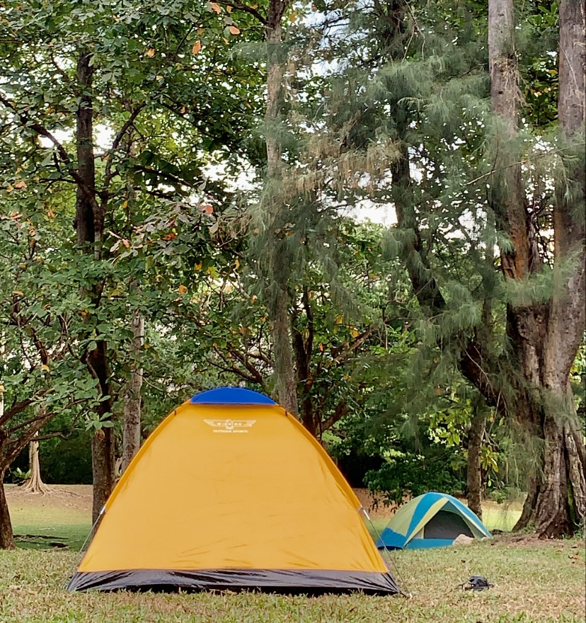

Enjoy the thrill and set your worries free by flying a kite in the sky at the spacious and windy grass lawn!
Alternatively, if the video doesn't work, find out the Top things to do in West Coast Park here
Reminisce childhood days’ fun of flying foxes by hopping on to ride the zip-line across the sand covered playground.
With several play areas, the playgrounds’ various play structures are catered for young and young at heart.
Both fun and challenging, you can expect to spend the whole day there.
Take on an escapade of beach volleyball instead of the usual indoor setting for a leisurely paced game.
Embark on your exploration of the extensive park on two wheels and follow the signs to navigate your way around.
Don’t own a bicycle? Fret not, you can rent a bicycle from GoCycling 🚲 (near Car Park 2)
GoCycling @ West Coast Park
Address: 51 West Coast Highway, Singapore 126784
Opening hours: Mon – Fri 10am-8pm | Sat & Sun 8.30am-8.30pm
Telephone: 9199 8411
Catch a glimpse of a range of wildlife animals around the park, a dream come true for both nature and animal lovers! 🦋

Can’t travel now? No problem! Pitch a tent in West Coast Park and experience a unique staycation.
Also, who can resist the scenic sunset view by the beachside at dusk? 🌄
Enjoy the thrill and set your worries free by flying a kite in the sky at the spacious and windy grass lawn!

Pop by McDonalds to take a quick bite to boost your energy! Located right in the middle of the park (also near Car Park 2),
it is convenient for all park users. It also offers open-air seating for those who want to dine amidst the lush greenery.
Drive to West Coast Park and park your car at
- Car Park 1 (Near Hardcourts),
- Car Park 2 (Near GoCycling Bike Rental) or
- Car Park 3 (Near McDonalds and the Playgrounds).
From Jurong MRT station , 🚇
Take Bus 176 from Jurong Regional Library bus stop,
Bus Stop ID 28249.
From Clementi MRT station 🚇
Take bus 175
from Clementi Interchange, Bus Stop ID 17009.
*Alight opposite MacDonald’s at West Coast Park, Bus Stop ID 17299
Bookmark this handy guide for your next West Coast Park adventure!
{kind=link}